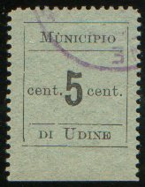

Note: on my website many of the
pictures can not be seen! They are of course present in the
catalogue;
contact me if you want to purchase the catalogue

5 c black on green
Value of the stamps |
|||
vc = very common c = common * = not so common ** = uncommon |
*** = very uncommon R = rare RR = very rare RRR = extremely rare |
||
| Value | Unused | Used | Remarks |
| 5 c | *** | *** | Exists tete-beche: R |
Small size with value
2 h black on red 5 h black on green 10 h black on blue Large size with arms
2 h black on green 5 h black on blue 10 h black on red 10 h black on orange
Modern 'reprints' exist, examples (for more information about these modern forgeries, click here):
Value in ellipse (imperforate)
14 L blue 28 L red Lion (imperforate)
14 L red 28 L green 56 L lilac Wheel on map of Italy (imperforate)
70 L light brown 140 L violet Byciclist on map of Italy (perforated)
14 L red 28 L green 56 L lilac 70 L brown 140 L grey

25 c green (chains and mountain) 50 c violet (torch and map of Italy) 1 L red (flag) 2 L blue (design as 25 c) 5 L olive (design as 50 c) 10 L lilac (design as 1 L) 25 L black (design as 1 L) Express stamp
2.50 L brown (mountain view)
I've seen all stamps (including express stamp) imperforate and perforated. I've also seen the values 25 L red and 10 L black (colours changed!) in a minisheet containing just one stamp:
25 L red, in minisheet, reduced size
More overprints were issued on the Socialist Republic and the Imperial set.
Reduced sizes.
50 c green 1 L red Surcharged 'cent 50' (red) on 50 c green 'Lire UNA' (blue) on 1 L red
5 L brown (I've only seen this value imperforate) 10 L blue (imperforate or rouletted) 50 L green (I've only seen this value imperforate)
'Lire 0,50' black 'Lire UNA' black
{kind=link}
{kind=link}